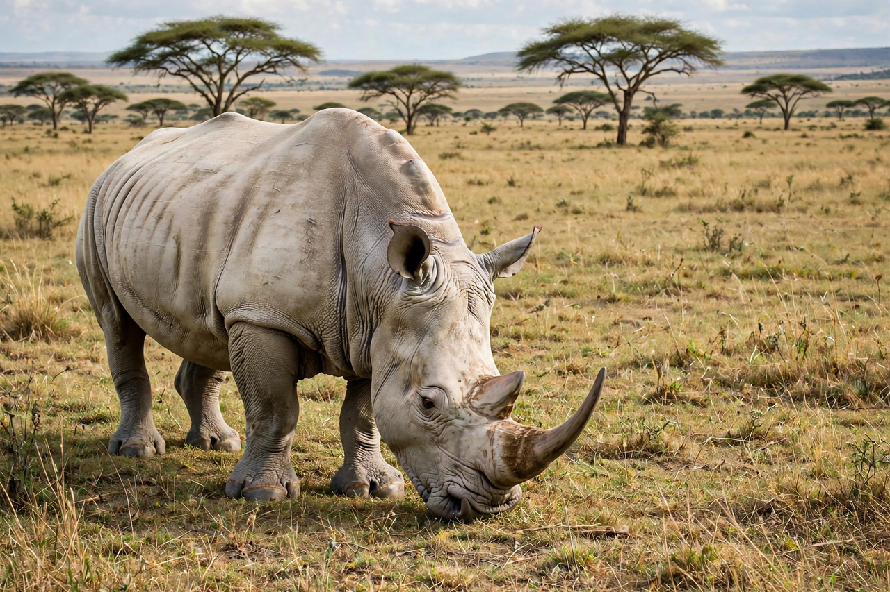

| Rhinoceros | |
|---|---|
 A white rhinoceros in southern Africa | |
| Family | Rhinocerotidae |
| Species | 5 living: white, black, Indian, Javan, Sumatran |
| Range | Africa and southern Asia |
| Diet | Herbivore |
A rhinoceros (from Greek rhinokeros, "nose-horned"), commonly abbreviated to rhino, is a member of the family Rhinocerotidae, the odd-toed ungulates characterised by one or two horns of keratin on the snout, thick protective skin, and large size. Five species survive: the white and black rhinoceroses of Africa, and the Indian, Javan and Sumatran rhinoceroses of Asia. Rhinos are among the largest land mammals, with white rhinos weighing over two tonnes.
Rhino horn is made entirely of keratin — the protein of hair and nails — and grows continuously from a bony boss on the skull, unlike the bone-cored horns of cattle. Rhinos have poor eyesight but acute senses of smell and hearing. African species and the Sumatran rhino bear two horns; the Indian and Javan rhinos bear one. The "white" rhino's name derives not from colour but from the Afrikaans wyd ("wide"), referring to its broad, square muzzle adapted for grazing; the black rhino has a hooked lip for browsing.
All rhino species are threatened by poaching for their horns, which are traded illegally for use in traditional medicine and as status symbols, and by habitat loss. The western black rhinoceros was declared extinct in 2011, and the northern white rhinoceros survives only as two females under guard in Kenya. Intensive protection — as in Zimbabwe's Matobo and South Africa's reserves — translocation, dehorning and anti-poaching patrols have stabilised some southern white and Indian rhino populations, which are conservation success stories, though poaching pressure remains severe.
The rhinoceros family was once far more diverse, including the hornless running rhinos of North America and the giant Paraceratherium of Asia, among the largest land mammals ever. The woolly rhinoceros survived in Ice Age Eurasia until about 14,000 years ago and is depicted in cave art.